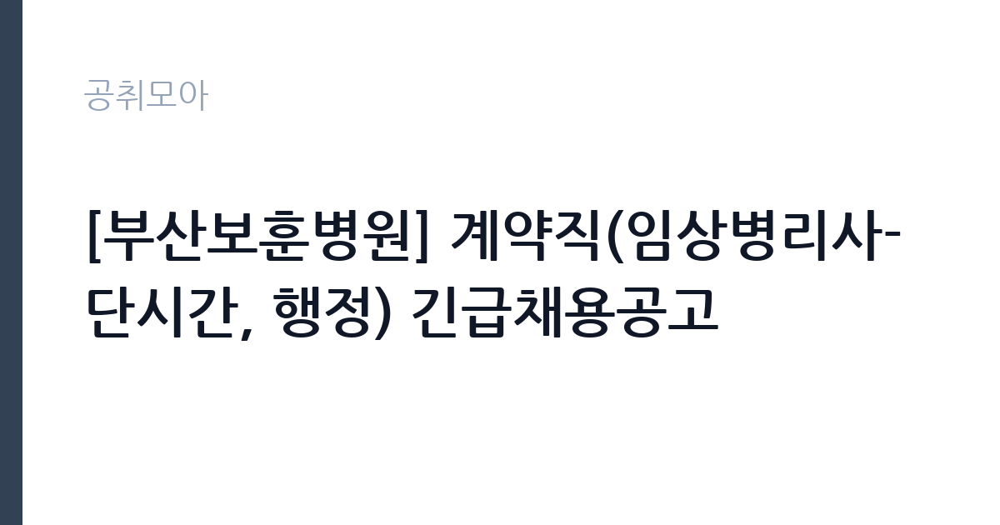

[공공기관] [부산보훈병원] 계약직(임상병리사-단시간, 행정) 긴급채용공고
한국보훈복지의료공단 · 부산 · 마감 2026-11-12 (D-11) · 출처 잡알리오

한눈에 보는 모집 조건
| 기관 | 한국보훈복지의료공단 |
|---|---|
| 공고명 | [부산보훈병원] 계약직(임상병리사-단시간, 행정) 긴급채용공고 |
| 고용형태 | 기간제 |
| 근무지 | 부산 |
| 게시일 | 2026-11-02 |
| 마감일 | 2026-11-12 (D-11) |
지원자격, 이렇게 읽으세요
- 공공기관 채용공시
- 세부 조건은 원문 공고문 확인
직종별로 요건이 다릅니다. 임상병리사 단시간은 공고일 기준 임상병리사 면허증 소지자여야 하고, 합격증서는 인정되지 않습니다. 행정은 필수 자격요건이 없어 학력과 경력 제한 없이 지원할 수 있습니다. 공통요건은 세 가지입니다. 공단 인사규정 제18조의 결격사유에 해당하지 않아야 하고, 인사규정 제44조에 따라 정년인 만 60세에 도달하지 않아야 합니다. 그리고 부산보훈병원의 다른 공고에 중복 지원할 수 없습니다. 중복 지원하면 서류심사에서 불합격될 수 있다고 공고문이 명시하고 있습니다. 같은 병원에서 약무직과 청년인턴 공고가 동시에 진행 중이므로 지원할 곳을 하나만 골라야 합니다.
이 공고의 포인트
첫 번째 포인트는 전형 배점입니다. 서류전형은 응시자격 적격 여부만 보고, 면접전형 100점으로 당락을 정합니다. 면접 60점 이상자 가운데 고득점 순으로 뽑고 가점을 포함합니다. 즉 서류는 통과 게이트이고 실질 평가는 면접 한 번에 집중됩니다. 두 번째는 가점입니다. 장애인은 전형단계별 10퍼센트, 취업지원대상자는 5퍼센트 또는 10퍼센트가 붙습니다. 다만 취업지원대상자 가점은 채용인원의 30퍼센트에만 적용되고 3명 이하 채용 시에는 적용되지 않습니다. 세 번째는 단시간 근무라는 점입니다. 임상병리사 3명은 단시간 계약직으로, 근무시간과 급여 산정 방식이 전일제와 다릅니다.
전형은 어떻게 진행되나
1차 서류전형은 11월 2일부터 11월 12일 오전 10시까지 접수된 서류로 응시자격 적격 여부를 심사합니다. 합격자는 11월 20일 금요일에 발표합니다. 2차 면접전형은 11월 24일 화요일에 진행되고, 면접 성적 100퍼센트로 60점 이상자 가운데 고득점 순으로 선발합니다. 최종합격자는 11월 26일 목요일에 발표합니다. 접수는 보훈공단 채용지원 사이트(bohun.fairyhr.com)에서 입사지원서를 작성하는 온라인 방식만 인정됩니다. 서류전형 단계에서 별도 배점이 없으므로 자격요건과 제출서류 완비가 곧 합격 조건입니다.
원문에서 확인한 전형 방식
가. 임상병리사-단시간 - 공고일 기준, 임상병리사 면허증 소지자 (합격증서 불인정) 나. 행정 - 필수자격요건 없음 다. 공통 -공단 인사규정 제18조에 정한 결격 사유에 해당하지 않는 자 -공단 인사규정 제44조(정년)에 따라 정년(만60세)에 도달하지 않은 자 -부산보훈병원 타공고 중복지원 불가(중복지원시 서류심사 불합격할 수 있음) ※전 항을 모두 충족해야함
이런 분께 추천해요
- 임상병리사 면허를 보유하고 단시간 근무가 가능한 분. 면허증 사본을 반드시 첨부해야 하고 합격증서는 인정되지 않습니다.
- 행정·사무 경험이 있는 분. 행정 직종은 필수 자격요건이 없어 진입 장벽이 낮습니다.
- 부산 사상구 인근에서 근무할 수 있는 분. 근무지는 부산보훈병원입니다.
지원 전 체크리스트
- 임상병리사 지원자라면 면허증 사본을 준비했는가. 공고문이 합격증서 불인정을 명시하고 있습니다.
- 부산보훈병원의 다른 공고에 함께 지원하지 않았는가. 중복 지원 시 서류심사 불합격 사유가 됩니다.
- 정년인 만 60세에 도달하지 않았는가. 인사규정 제44조가 적용됩니다.
- 접수 마감이 오전 10시라는 점을 확인했는가. 다른 공고와 달리 마감 시각이 이릅니다.
모집 일정과 제출 타이밍
서류접수는 2026년 11월 2일 월요일 오후 2시에 시작해 11월 12일 목요일 오전 10시에 마감합니다. 마감 시각이 오전 10시라는 점이 이 공고의 가장 큰 함정입니다. 오후까지 접수할 수 있다고 생각하면 기회를 잃습니다. 서류전형 합격자는 11월 20일 금요일, 면접은 11월 24일 화요일, 최종합격자는 11월 26일 목요일에 발표합니다. 모든 전형이 11월 안에 끝나는 빠른 일정입니다.
직무 이해하기: 공공기관
한국보훈복지의료공단은 국가유공자와 보훈가족의 의료·복지 서비스를 담당하는 준정부기관으로, 전국 6개 보훈병원을 운영합니다. 부산보훈병원은 부산 사상구 백양대로에 있습니다. 임상병리사는 진단검사의학과에서 혈액·소변·미생물 검체를 분석하고 결과를 검사 의뢰 부서에 전달하는 업무를 맡습니다. 단시간 근무이므로 검체 처리 시간대가 정해져 있고, 교대 없이 정해진 시간만 근무하는 형태일 가능성이 큽니다. 행정 직종은 진료 지원이나 원무·서무 업무를 보조합니다. 두 직종 모두 환자와 직접 접점이 있는 현장이라 응대 태도가 업무 평가에 영향을 줍니다.
자기소개서 작성 팁
이 공고는 서류전형에서 배점을 두지 않고 면접 100점으로 당락을 정합니다. 자기소개서는 평가용이라기보다 면접 질문의 재료가 됩니다. 따라서 잘 쓴 글보다 질문을 유도할 수 있는 구체적 사례가 유리합니다. 첫 문단에서는 지원 직종을 명확히 밝히고, 면허나 경력 가운데 가장 실무적인 부분을 한 줄로 제시하십시오. 두 번째 문단에서는 보훈병원의 환자 구성이 일반 병원과 다르다는 점을 이해하고 있다는 내용을 넣으십시오. 고령 환자와 국가유공자가 많아 설명과 응대 방식이 달라진다는 점을 본인 경험과 연결하면 좋습니다. 세 번째로는 단시간 근무라는 조건을 감당할 수 있다는 점을 근무 가능 시간과 함께 분명히 적으십시오.
면접 준비 포인트
면접은 100점 만점으로 60점 이상이면 합격 후보가 되고 고득점 순으로 선발합니다. 질문은 세 갈래로 예상됩니다. 첫째 직무 전문성입니다. 임상병리사라면 검체 처리 과정과 정도 관리 경험을, 행정이라면 문서 처리와 시스템 사용 경험을 준비하십시오. 둘째 보훈병원에 대한 이해입니다. 국가유공자와 보훈가족을 대상으로 한다는 점, 6개 병원 체계를 알고 있는지가 평가에 영향을 줍니다. 셋째 근무 조건 수용 여부입니다. 단시간 근무와 급여 산정 방식을 이해하고 있는지 확인합니다.
급여·근무조건 읽는 법
공고문에는 임금이 금액으로 명시되어 있지 않아 원문 공고문과 병원 총무부 확인이 필요합니다. 기관 전체 수준은 알리오 2025년 결산 공시로 볼 수 있습니다. 한국보훈복지의료공단의 일반정규직 1인당 평균보수액은 7,172만원, 신입사원 초임은 4,170만원입니다. 다만 이번 채용은 계약직이고 그중 3명은 단시간 근무라 위 정규직 공시값이 그대로 적용되지 않습니다. 단시간 근무는 전일제 급여를 근무시간 비율로 나눠 산정하는 방식이 일반적이므로, 주당 근무시간을 먼저 확인해야 월 급여를 가늠할 수 있습니다. 4대 보험 가입과 수당 지급 기준도 원문에서 확인하십시오.
자주 묻는 질문
- 임상병리사와 행정에 동시에 지원할 수 있나요?
같은 공고 안에서 직종을 하나만 선택해 지원하는 구조입니다. 부산보훈병원의 다른 공고에 중복 지원하면 서류심사에서 불합격될 수 있다고 공고문이 명시하고 있습니다. - 계약 기간은 얼마나 되나요?
공고문에 계약 기간이 명시되어 있지 않습니다. 보훈공단 계약직은 통상 1년 단위로 운영되며, 정확한 기간과 갱신 조건은 원문 공고문과 총무부에 확인해야 합니다. - 면접은 어떻게 평가하나요?
면접전형 100퍼센트로 평가하고 60점 이상자 가운데 고득점 순으로 선발합니다. 장애인은 10퍼센트, 취업지원대상자는 5퍼센트 또는 10퍼센트 가점이 더해집니다.
함께 보면 좋은 공고
[공공기관] 대한적십자사 인천사할린동포복지회관 직원(요양보호사) 채용 공고 — 마감 2026-11-17[공공기관] 건설분야 기간제 근로자 채용공고 [HVDC건설본부] — 마감 2026-11-16[공공기관] 대한적십자사 인천사할린동포복지회관 직원(요양보호사) 채용 공고 — 마감 2026-11-17출처: 잡알리오 공개정보를 바탕으로 공취모아가 정리한 안내글입니다. 모집 조건·일정은 변경될 수 있으니 지원 전 반드시 원문 공고문을 확인하세요. 본 글은 정보 제공용이며 합격을 보장하지 않습니다.